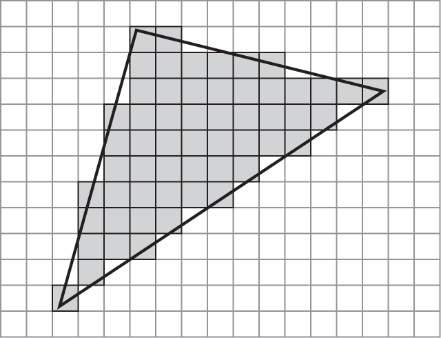

Rasterization
The Rasterization stage interpolates varying values across the area of a primitive.

It determines which of the fragments (a.k.a. pixels) on the screen lie within that primitive.
It calculates an interpolated varying value at the center of each fragment.

The resulting values are the input to the Fragment Processing stage.